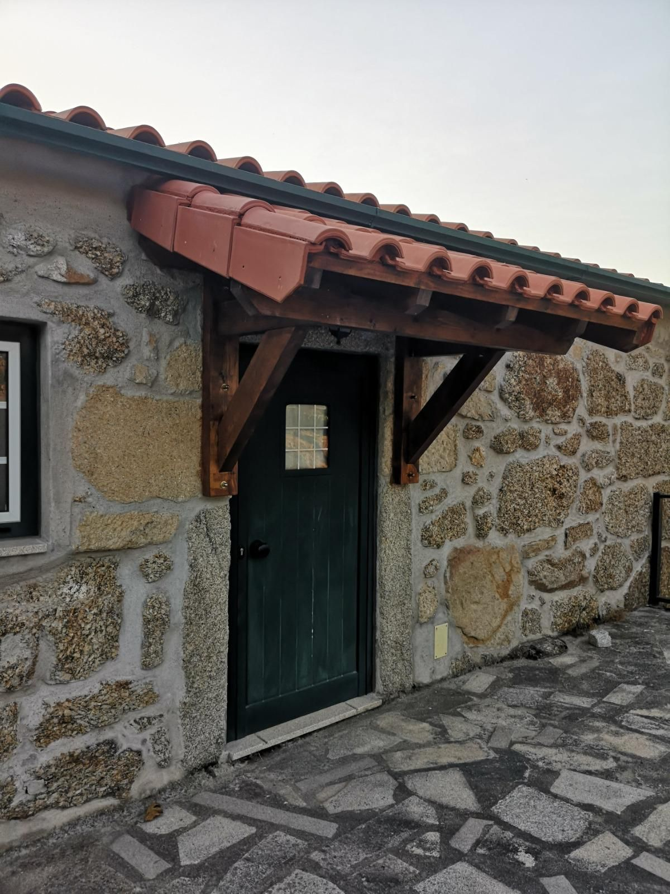
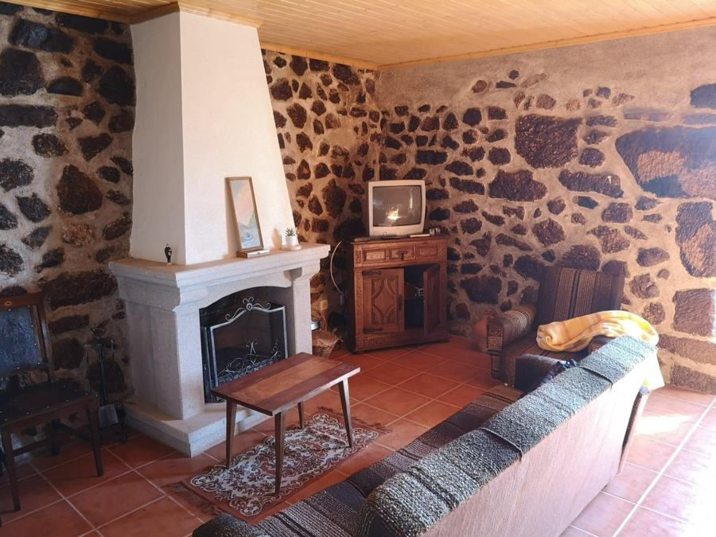
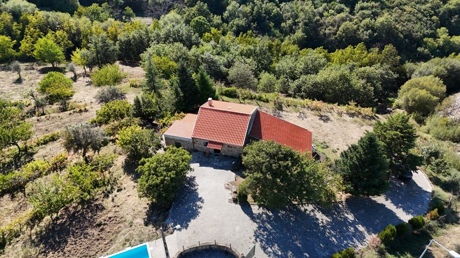
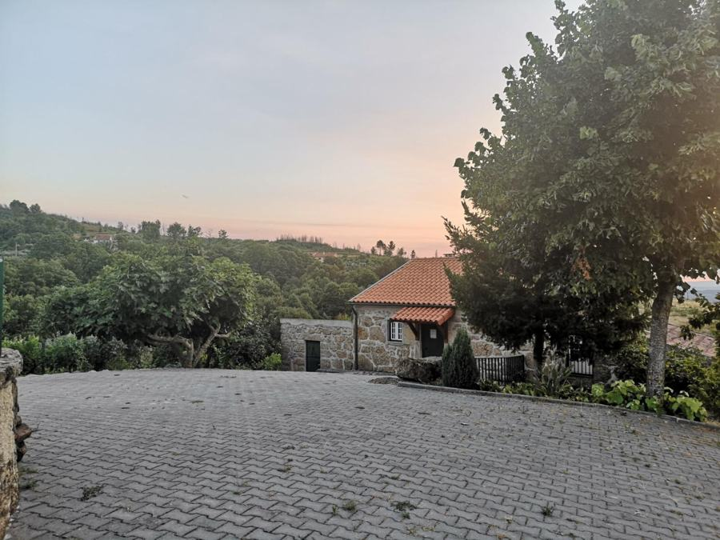
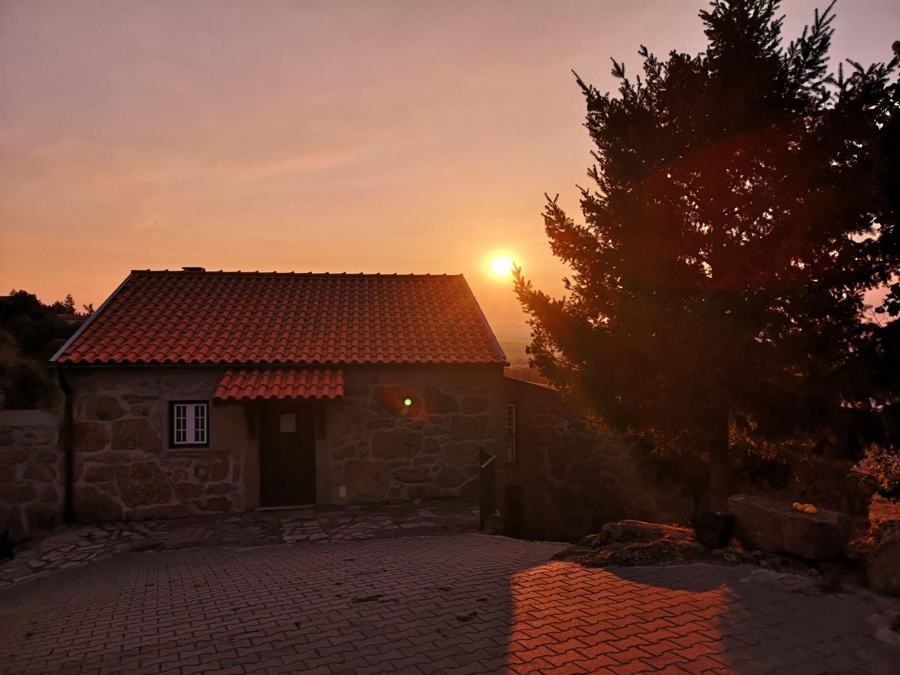

Quinta de Santa Guilha
Casa de granito e cinco hectares de olival, vinha e pomar em Gouveia, na encosta da Serra da Estrela.
ReservarUma casa de granito na encosta de Gouveia
A Quinta de Santa Guilha fica na vertente noroeste da Serra da Estrela, com vista aberta sobre o vale do Mondego. São cinco hectares de olival, vinha, pomar e nogueiral à volta de uma casa tradicional de granito.
Foi a casa de três gerações da família Loureiro. Foi remodelada com cuidado para receber quem quer passar uns dias no campo, com a serra à porta.
A nossa história
A quinta em imagens
Fotografia 1 de 5
Descubra a quinta
A casa, a terra à volta e o que há para ver na região.
-

-

-

O ano na quinta
O trabalho de cada mês e as atividades em que pode participar: a vindima, a pisa das uvas e a apanha da azeitona.
Ver as atividades -

Venha passar uns dias na quinta
Diga-nos as datas e quantas pessoas vêm. Respondemos com a disponibilidade e o preço da estadia.
Reservar